excav PILOT Bedienungsanleitung!
Hier finden Sie eine ausführliche Bedienungsanleitung für Ihren excav PILOT, ausgestattet mit vielen Bildern, Videos und Tipps. Falls Sie zu einem Teil Fragen haben, kontaktieren Sie uns gerne per Mail an support@excav.de
Hinweise
In dieser Bedienungsanleitung wird wie folgt auf wichtige Informationen, Warnungen und Gefahren aufmerksam gemacht:
Information
Hier finden Sie relevante Informationen.
Warnung
Diese Nachricht warnt vor möglichen Fehlern.
Gefahr
Diese Nachricht weist auf Gefahren hin.
Struktur
Geräteübersicht
In der Geräteübersicht wird die gesamte Hardware inklusive aller technischen Daten erläutert.
Erste Schritte
Falls Sie das System zum ersten Mal in Betrieb nehmen, starten Sie am Besten im Reiter Erste Schritte. Wir empfehlen Ihnen zudem, sich ausführlich unsere Videoanleitung anzusehen.
App
Nach erfolgreicher Inbetriebnahme finden Sie im Reiter Arbeitsansicht sowie im Reiter Funktionen alle Erläuterungen zur App sowie deren Einstellungsmöglichen.
Geräteübersicht
Dies ist eine schnelle Übersicht der im Koffer befindlichen Systemteile und deren Funktionen.

Koffer

Das System wird mit einem stabilen Koffer ausgeliefert. Der An- und Abtransport des Systems zur und von der Baustelle ist so sicher möglich.
Sensor

Der Sensor ermittelt über ein GNSS-Modul und weitere Sensoren die Position, Ausrichtung und Neigung des Löffels und errechnet daraus die Steuerempfehlungen für den Baggerfahrer. Entsprechend ist eine präzise Anbringung und Vermessung während der Einrichtung des Systems essentiell für die Qualität der Ergebnisse.
LED-Anzeigekreuz

Das LED-Anzeigekreuz wird am Stiel oberhalb des Löffels montiert und bietet eine visuelle Unterstützung bei der Erfassung der Löffelposition in Relation zur Planierfläche.
Der vertikale LED-Strang informiert über die Höhendifferenz von Löffelschneide und eingegebener Soll-Höhe:
- Ein LED-Ausschlag nach oben bedeutet, dass sich die Löffelschneide noch über der eingegebenen Soll-Höhe befindet.
- Ein LED-Ausschlag nach unten bedeutet, dass sich die Löffelschneide bereits unter der eingegebenen Soll-Höhe befindet.
Der horizontale LED-Strang informiert über die Abweichung der frontalen Löffelneigung zur Flächen-Soll-Neigung:
- Ein LED-Ausschlag nach rechts bedeutet, dass der Löffel zu weit nach rechts (im Uhrzeigersinn) geneigt ist.
- Ein LED-Ausschlag nach links bedeutet, dass der Löffel zu weit nach links (gegen den Uhrzeigersinn) geneigt ist.
Tablet

Das Tablet visualisiert die vom Sensor ermittelten Raumdaten von Löffel und Planierfläche. Zudem können Sensor und Anzeigekreuz über das Tablet nach Bedarf konfiguriert werden. Weitere Informationen und Beschreibungen zur Benutzeroberfläche und den Funktionen finden sich unter "App".
Basisstation

Die Basisstation dient ausschließlich zur Ermittlung der GNSS-Korrekturdaten und kommuniziert diese mit der Sensoreinheit. Dies ist notwendig um die hohe Genauigkeit der Sensoreinheit zu gewährleisten.
Kalibriertool

Das Kalibriertool dient als Hilfe bei der Vermessung und Kalibrierung des Löffels.
Messstab


Mit dem Messstab ist es besonders einfach Punkte auf der Baustelle einzulesen. Der Sensor wird an der Oberseite des Messstabs angebracht. Mithilfe der Tablethalterung kann auch das Tablet seitlich am Messstab mitgeführt werden.
Aufladen

Der Sensor, die Anzeige und die Basis verfügen über einen magnetischen Ladestecker auf der Unterseite. Das Tablet hat einen regulären USB-C Anschluss. Mit dem mitgelieferten Ladekabeln und Steckdosennetzteil kann das komplette System in 2,5 Stunden aufgeladen werden.
Erste Schritte ↵
Aufbauen und Anbringen
Ein Live-Beispiel zum Aufbauen und Einrichten des Systems finden Sie auch in unserer Videoanleitung (auch in der App abspielbar).
Basisstation aufstellen
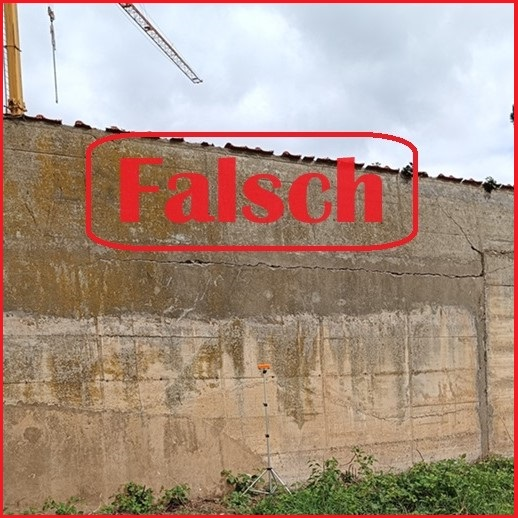
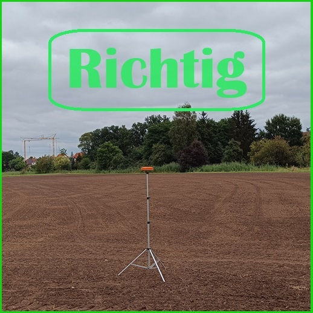
Bitte beachten Sie beim Aufstellen der Basisstation folgende Richtlinien:
- Die Basisstation sollte erhöht auf einem Stativ positioniert werden, damit der Satellitenempfang nicht durch in der Nähe befindliche Objekte (Baum, Haus, Container, etc.) gestört wird. Die Höhe des nächstgelegenen Objektes sollte als Mindestmaß an Abstand eingehalten werden.
- Die Basisstation muss unter freiem Himmel aufgestellt werden, um einen idealen Satellitenempfang zu gewährleisten.
- Die Basisstation darf während der Arbeiten nicht bewegt werden.
- Die Basisstation muss auf festem Untergrund platziert werden.
Vorsicht bei Standortwahl
Gehen Sie bei der Wahl eines geeigneten Standorts besonders sorgsam vor und wählen Sie eine möglichst freie Position. Denn auch höhere Bäume oder Häuser im Radius von 15 Metern um die Basisstation können die Kommunikation beeinträchtigen.
Kran auf der Baustelle
Besonders problematisch für die Qualität der Korrekturdaten ist ein größerer, aktiver Kran auf der Baustelle (d.h. er ändert seine Position regelmäßig). Unter Umständen kann in diesem Fall nicht mit dem System gearbeitet werden.
Vorsicht vor weichem Untergrund
Beim Platzieren der Basisstation auf weichem Untergrund kann es passieren, dass sich die Position der Basisstation während der Arbeiten durch Absinken des Stativs verändert. Dies hat zur Folge, dass sich alle erstellten Punkte/Ebenen um die selbe Abweichung verschieben. Folglich sind alle nachfolgenden Arbeiten fehlerhaft.
Schalten Sie die Basisstation erst nach erfolgter Standortwahl an, indem Sie den Knopf auf der Unterseite des Gehäuses drücken. Ein grün leuchtender Knopf bedeutet, dass die Basisstation eingeschaltet ist.
Anzeigekreuz anbringen

Schalten Sie das Anzeigekreuz an, indem Sie den Knopf auf der Rückseite des Gehäuses drücken. Ein grün leuchtender Knopf bedeutet, dass die LED-Anzeige eingeschaltet ist.
Befestigen Sie das Anzeigekreuz anschließend mit den angebrachten Magneten auf mittlerer Höhe an der zur Fahrerkabine zeigenden Seite des Baggerarms. Achten Sie hierbei auf gute Sichtbarkeit aus der Fahrerkabine.
WLAN
Das Anzeigekreuz dient nicht nur der visuellen Unterstützung, sondern spannt auch das WLAN-Netz für das Tablet auf. Zusätzlich wird über das Anzeigekreuz ein zweiter Kommunikationskanal zwischen Sensor und Basisstation bereitgestellt, sollte die Verbindungsqualität durch z.B. Ausschachtungsarbeiten beeinträchtigt sein. Entsprechend kann es bei tieferen Arbeiten Abhilfe schaffen, das Anzeigekreuz weiter oben am Baggerstil zu montieren.
Sensor anbringen

Schalten Sie den Sensor ein, indem Sie den Knopf auf der Unterseite des Gehäuses drücken. Ein grün leuchtender Knopf bedeutet, dass der Sensor eingeschaltet ist.
Befestigen Sie den Sensor am Löffel. Beachten Sie dabei bitte folgende Richtlinien:
- Der Sensor sollte möglichst weit außen auf der von der Fahrerkabine aus gesehen rechten oberen Seite des Löffels befestigt werden.
- Der Sensor darf nicht über den Rand des Löffels hinausragen.
- Der Pfeil auf der Oberseite des Sensors muss zur Fahrerkabine zeigen.
- Die Hinterkante des Sensors muss parallel zur Löffelschneide verlaufen.
- Der Sensor darf nicht durch Hydraulik oder überstehende Bleche verdeckt werden.
- Der Sensor sollte auf einem möglichst geschützten Bereich am Löffels befestigt werden.
Löffel bzw. Schaufel an der Anbringstelle ordentlich säubern
Der Löffel bzw. die Schaufel muss an der Anbringstelle des Sensors sauber sein, sodass die Magneten direkt das Metall berühren und keine Dreckschicht dazwischen liegt. Auch wenn diese nur aus etwas Sand besteht, kann dies die Magnetstärke signifikant beeinträchtigen.
Sensor sorgfältig anbringen
Sowohl das Anbringen des Sensors als auch das im nächsten Kapitel beschriebene Einmessen des Löffels sind von äußerster Wichtigkeit. Ist die Einrichtung des Sensors fehlerhaft, so kann dies die Qualität der darauffolgenden Arbeiten nachhaltig reduzieren.
Die richtige Anbringung des Sensors auf der Baggerschaufel ist entscheidend für gute Ergebnisse und lässt sich rein textbasiert nicht ganz trivial beschreiben. Wir empfehlen daher, dass Sie sich auch mithilfe der grafischen Anleitung in unserem youtube Video informieren (auch in der App abspielbar).
Tablet und Halterung im Fahrerhaus anbringen

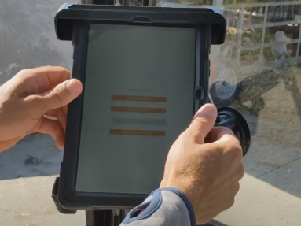
Der Tablet-Halter wird an einer Fensterscheibe auf der Innenseite der Fahrerkabine des Baggers befestigt. Achten Sie dabei bitte auf eine saubere Fensterscheibe. Drücken Sie die Halterung an gewünschter Stelle an die Fensterscheibe und drehen Sie diese an den beiden Saugnäpfen fest. Prüfen Sie anschließend durch leichtes Wackeln den sicheren Sitz der Saugnäpfe. Danach kann die Halterung in die gewünschte Position geschwenkt werden. Schrauben Sie hierzu das Bindeglied zwischen Saugnäpfen und Halterung leicht auf und ziehen Sie es nach Positionierung wieder fest. Das Tablet kann nachfolgend in die Halterung eingeschoben werden.
Anfeuchten der Saugnäpfe
Sollte sich der Tablet-Halter wiederholt von der Scheibe lösen, so können Sie die Saugnäpfe etwas anfeuchten. Dies garantiert einen besseren Halt an der Scheibe.
Mit den Knöpfen an der Seite des Tablets kann dieses ein- und ausgeschaltet werden. Sofern der Bagger über einen Zigarettenanzünder oder einen 5V- bzw. 12V-Anschluss verfügt, können Sie das Tablet auch an den Strom anschließen. Falls Sie mit einem Tablet den ganzen Tag auf Akku arbeiten möchten, empfehlen wir, dieses in den Pausen abzuschalten.
System einrichten

Lesen Sie sich bitte die folgenden Unterpunkte sorgfältig durch und starten Sie anschließend die excav PILOT App. Dort finden Sie unter “Startmenü => Einrichtungsassistent" ein geführtes Menü zur Kalibrierung Ihres Systems. Vergewissern Sie sich bitte davor, dass die einzelnen Geräte gemäß des vorherigen Abschnitts Aufbauen und Anbringen richtig aufgestellt bzw. an Baggerarm und Löffel befestigt wurden.
Es gibt eine ausführliche Videoanleitung auf youtube (auch in der App abspielbar), in der ein komplettes Setup durchgeführt und erklärt wird. Wir raten Erstnutzern dringend, bei der Systemeinrichtung auf die Videoanleitung zurückzugreifen und den nachstehenden Leitfaden nur unterstützend zu verstehen.
Geräte verbinden

Bevor Sie mit der Konfiguration des Systems starten können, müssen Basisstation, Anzeige und der Sensor verbunden sein. Sollte die Verbindung eines oder mehrerer Geräte fehlschlagen, prüfen Sie bitte zuerst den Akkustand und ob die entsprechenden Geräte eingeschaltet sind. Versuchen Sie bei dennoch anhaltenden Verbindungsproblemen die Geräte näher zusammenzubringen.
Arbeitsplatz anlegen/laden

Um einen neuen Arbeitsplatz anzulegen, wählen Sie "Neuer Arbeitsplatz". Sie können hier auch einen bereits angelegten Arbeitsplatz laden. Das Laden eines Arbeitsplatzes wird hier beschrieben.
Baumaschine wählen

Wählen Sie hier die Baumaschine aus, an der Sie den PILOT anbringen wollen. Der Einrichtungsprozess läuft für jede Maschine gleich ab. Einzig der Messstab wird direkt geladen und bedarf keiner weiteren Kalibrierung.
Löffel vermessen

Die nachstehenden Schritte müssen sorgfältig ausgeführt werden, da ansonsten Messfehler entstehen, die sich in der späteren Arbeit fortsetzen. Bitte messen Sie bis auf eine Nachkommastelle genau.
Bestimmen Sie zuerst die Breite der Löffelschneide und tragen Sie den Wert in der App ein.
Danach bestimmen Sie den seitlichen Versatz (Einrückung) des Sensors. Dies ist die Distanz von der Sensormitte bis zur von der Fahrerkabine gesehen rechten Außenseite des Löffels. Tragen Sie den ermittelten Wert in die App ein.
Abgenutzte Löffelschneide
Bei manchen Löffeln sind die Seitenwände leicht angeschrägt oder die Schneide steht etwas über. Messen Sie in diesem Fall die geschätzte Distanz bis zum äußersten Punkt der Löffelschneide.
Wie Sie die Höhe des Löffels mithilfe des Kalibriertools ablesen wird Ihnen im nächsten Kapitel erklärt.
Kalibriertool anbringen


Gehen Sie bei der Anbringen des Kalibriertools am Löffel wie folgt vor:
- Positionieren Sie den Löffel mit der Schneide auf einem ebenen und stabilen Untergrund. Die Schneide darf nicht einsinken.
- Bringen Sie anschließend das Kalibriertool an der Löffelseite an, sodass der blaue Punkt auf dem Sensor in der Mitte des kleinen Rohres erscheint.
- Befestigen Sie den Meterstab so in der Halterung am Ende des Kalibriertools, dass dieser am Ort der Löffelschneide den Boden berührt. Der Meterstab kann durch leichtes Drücken in das Kalibriertool fixiert werden.
- Lesen Sie anschließend die Höhe ab. Sie ist der Abstand zwischen Löffelschneide und Markierung (Kerbe) am Kalibriertool.
Lassen Sie das Kalibriertool mit Meterstab für den nachfolgenden Schritt am Löffel befestigt.
Löffel justieren


Heben Sie den Löffel als nächstes leicht an und neigen Sie diese, bis die Spitze des Meterstabs exakt mit der Schneide übereinstimmt. Das Kalibriertool mit fixiertem Meterstab dient Ihnen dabei als Hilfe, das Lot zu finden. Holen Sie sich hierzu ggf. eine zweite Person zu Hilfe, die die Position von der Seite überprüft. Ist die angegebene Position eingenommen, dann bestätigen Sie dies in der App mit “Weiter”.
Löffelecke wählen

Als nächstes können Sie die gewünschte Löffelecke auswählen. Von dieser wird die Höhendifferenz zur Planierfläche berechnet. Des Weiteren wird sie zur Erfassung von Punkten auf der Baustelle herangezogen. Den genauesten Messwert erhalten Sie an der am nächsten zum Sensor befindlichen Ecke. Bei stark abgenutzten Ecken der Schneide empfiehlt sich die mittlere Position zum Antasten von Punkten, bei denen primär die Höhe relevant ist.
Referenzpunkt setzen


Der Referenzpunkt dient als Nullpunkt, von dem aus alle weiteren Maße errechnet werden. Hierfür bietet sich eine Stelle auf der Baustelle an, die über den gesamten Bauverlauf verfügbar bleibt, jederzeit gut zu erreichen ist und freie Sicht auf den Himmel bietet. Zur Erfassung des Referenzpunkts müssen Sie die ausgewählte Löffelecke an die entsprechende Stelle bewegen, auf “Referenzpunkt setzen” klicken und dann 3 Sekunden warten, bis der Referenzpunkt vermessen ist.
Erste Fläche abziehen
Hier wird in naher Zukunft ein Beispiel hinterlegt, das das Arbeiten mit und Definieren von Flächen zeigt (siehe Flächenerstellungen).
Ended: Erste Schritte
App ↵
Der Einrichtungsassistent ist unter Erste Schritte -> System Einrichten beschrieben.
Arbeitsansicht

Nach erfolgreicher Kalibrierung des Systems gelangen Sie automatisch in die Arbeitsansicht, die Ihnen Informationen über die Position des Löffels im Raum und in Bezug zur Planierfläche bietet und Sie bei Ihren Arbeiten visuell unterstützt.
Batterieanzeige von Anzeige, Basis und Sensor

Die Kopfleiste der Arbeitsansicht zeigt den aktuellen Akkustand der Anzeige, der Basisstation und des Sensors an. Achten Sie idealerweise darauf, dass die Akkustände nicht unter 10% fallen, da sich dies insbesondere bei Sensor und Basisstation negativ auf die Performanz auswirken kann. Eine volle Akkuladung reicht ca. 16 Stunden. Die Ladezeit beläuft sich in etwa auf 2,5 Stunden.
Frontalansicht - Löffel in Bezug zur Planierfläche

Die linke obere Box in der Arbeitsansicht visualisiert den Baggerlöffel in einer 2D-Frontalansicht:
- Das graue Rechteck stellt den Löffel dar, wobei die Seitenverhältnisse der Eingaben von Höhe und Breite bei der Vermessung entsprechen.
- Der rote Punkt an der unteren rechten Ecke des Löffels zeigt die ausgewählte Löffelecke. Von diesem Punkt aus wird der Abstand zur Fläche berechnet.
- Der grüne Strich zeigt die Höhe der erstellten Fläche ohne Versatz an (Ist-Fläche). Er ist nur sichtbar, wenn ein Versatz angesetzt wurde.
- Braun eingefärbt ist die von Ihnen erstellte Planierfläche (Soll-Fläche). Sollten Sie noch keine eigene Fläche erstellt haben (Fläche mit 3 Punkten, Fläche mit 2 Punkten und Neigung, Fläche mit 1 Punkt, Neigung und Richtung, Horizontale auf Höhe eines Punktes), dann wird standardmäßig eine Parallele zur Horizontalen auf Höhe des Referenzpunktes gezogen.
Seitenansicht - Baggerlöffel in Bezug zur Planierfläche

Die rechte obere Box in der Arbeitsansicht visualisiert den Baggerlöffel in einer 2D-Seitenansicht:
- Die Baggerschaufel wird grau dargestellt.
- Die grüne Linie zeigt die von Ihnen einmessene Fläche. Sie ist nur sichtbar, wenn ein Versatz angesetzt wurde.
- Die Zielfläche, also mit dem von Ihnen eingestellten Versatz zur eingemessenen Fläche, wird braun dargestellt. Sollten Sie noch keine eigene Fläche erstellt haben (Fläche mit 3 Punkten, Fläche mit 2 Punkten und Neigung, Fläche mit 1 Punkt, Neigung und Richtung, Horizontale auf Höhe eines Punktes), dann wird standardmäßig eine Parallele zur Horizontalen auf Höhe des Referenzpunktes gezogen.
Draufsicht Baustelle / Bauplan

Die Draufsicht auf die Baustelle informiert Sie über die Position des Baggerlöffels in Bezug zum Referenzpunkt (REF) und den von Ihnen erfassten Punkten auf der Baustelle. Der graue horizontale Strich stellt den Löffel dar, wobei die Länge des Strichs der eingegebenen Löffelbreite entspricht. Zudem zeigt der rot gekennzeichnete Vektor N stets Richtung Norden.
Sie können auch Ihren eigenen Bauplan in der Draufsicht hochladen. Mehr Informationen hierzu finden Sie in der App unter "Bauplan laden".
Anzeige der horizontalen und vertikalen Abweichung
Der vertikale Balken auf der linken Seite der Arbeitsansicht zusammen mit dem horizontalen Balken, welcher die Löffelansichten von der Draufsicht auf den Bauplan trennt, stellen das Analogon zur Anzeige am Baggerarm (vgl. Anzeigekreuz) dar. Je nach Präferenz oder falls die Anzeige am Baggerarm aus dem Fahrerhaus nicht gut einsehbar ist, können hierüber aktuelle Höhen- und Neigungsabweichungen von den Soll-Werten abgelesen werden. Der mittige, dunkelgrüne Strich in beiden Balken bezeichnet den jeweiligen Soll-Wert.
Funktionen ↵
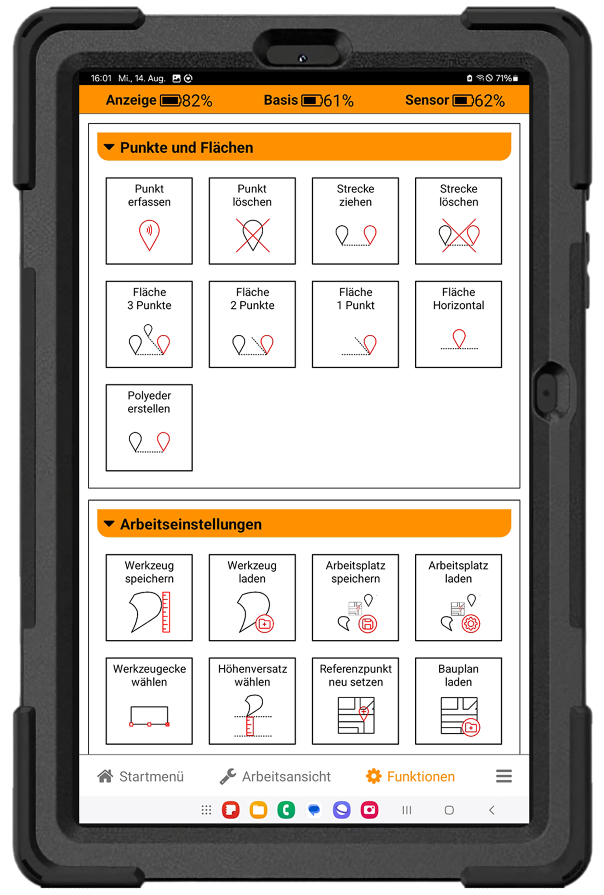
Punkte und Flächen ↵
Punkte erfassen
Punkte erfassen
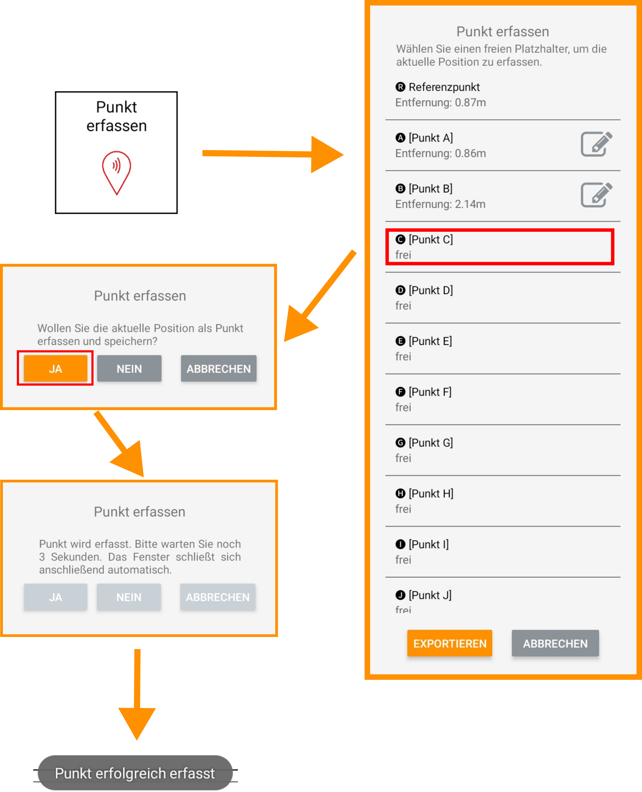
Mit dieser Funktion können Sie Punkte auf der Baustelle erfassen und in einer Punkteliste abspeichern. Montieren Sie hierfür den Sensor auf dem Messstab oder bewegen Sie alternativ die ausgewählte Ecke des Baggerlöffels auf den entsprechenden Punkt im Raum und speichern Sie diesen in einem der Punkte-Slots (A, B, C, …) ab. Aus der Punkteliste können Sie im Folgenden Punkte auswählen, mit Hilfe derer Sie Strecken, Polyeder und Flächen erschaffen können (z.B. Fläche durch drei Punkte ziehen). Die Punkte können zudem als Orientierung auf der Baustelle dienen.
Information
Benötigen Sie eine reine Höhenreferenz, bietet es sich an die Mitte der Schaufel zum Erfassen der Punkte zu benutzen. Möchten Sie die Punkte möglichst genau bestimmen, empfehlen wir immer den Messstab zu benutzen.
Punkte löschen
Punkte löschen

Sollten Sie einen oder mehrere Ihrer bereits abgespeicherten Punkte für künftige Bauarbeiten nicht mehr benötigen, können Sie diese(n) wieder aus Ihrer Punkteliste löschen. Wählen Sie hierzu den zugehörigen Punkt-Slot aus und bestätigen Sie mit "Ja".
Strecke ziehen
Strecken und Geraden ziehen
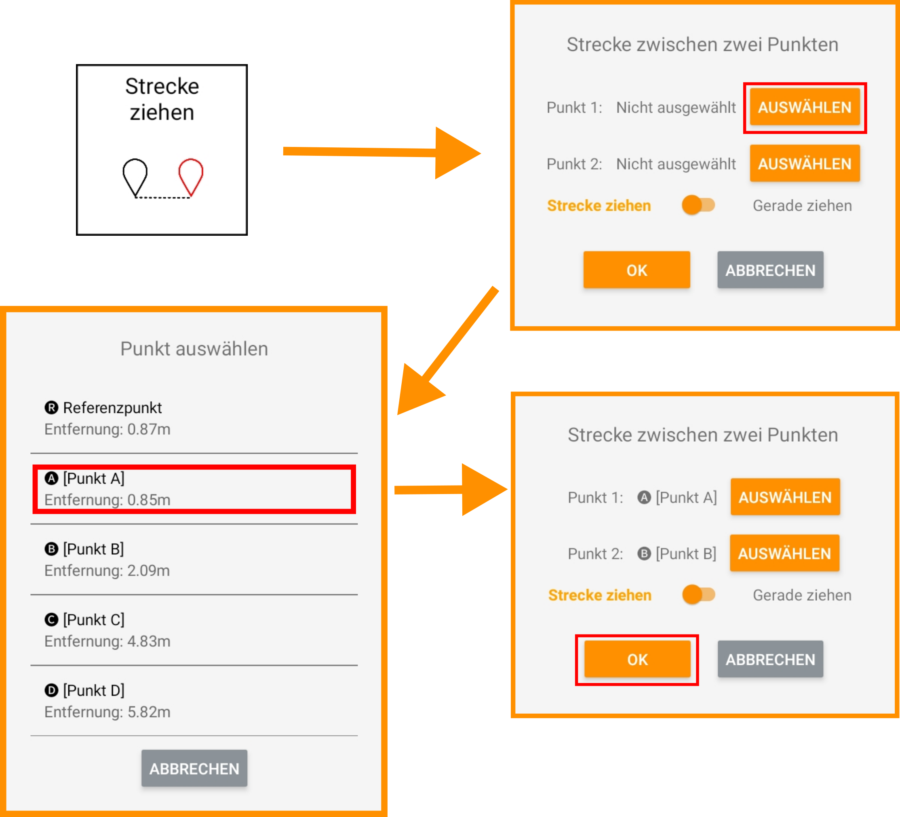
Sie können in der Kartenansicht der Arbeitsansicht auch Strecken bzw. Geraden abbilden. Erfassen Sie hierfür den Startpunkt und Endpunkt der Strecke als Punkte in der App (Punkte erfassen). Wählen Sie die erfassten Punkte im Anschluss aus. Bestimmen Sie mithilfe des darunterliegenden Reglers, ob Sie die Punkte mit einer Strecke verbinden möchten oder eine durchgehende Gerade legen wollen und bestätigen Sie Ihre Auswahl mit “OK”. Die Strecke wird automatisch generiert und ist in der Arbeitsansicht einsehbar.
Strecke löschen
Strecken und Geraden löschen

Wird die erstellte Strecke bzw. Gerade für anschließende Bauarbeiten nicht mehr benötigt und die Bauplanübersicht dadurch behindert, können Sie diese mithilfe von “Strecke löschen” auch wieder entfernen. Wählen Sie dazu die zu löschende Strecke aus und bestätigen Sie mit "OK".
Fläche mit 3 Punkten
Fläche aus drei Punkten

Nachdem Sie drei Punkte erfasst haben, können Sie eine Fläche (Ihre gewünschte Planierfläche) aus den von Ihnen ausgewählten Punkten erschaffen. Eine Fläche im Raum ist durch drei Punkte eindeutig definiert. Als Punkte bieten sich zum Beispiel drei Eckpunkte auf der Baustelle an.
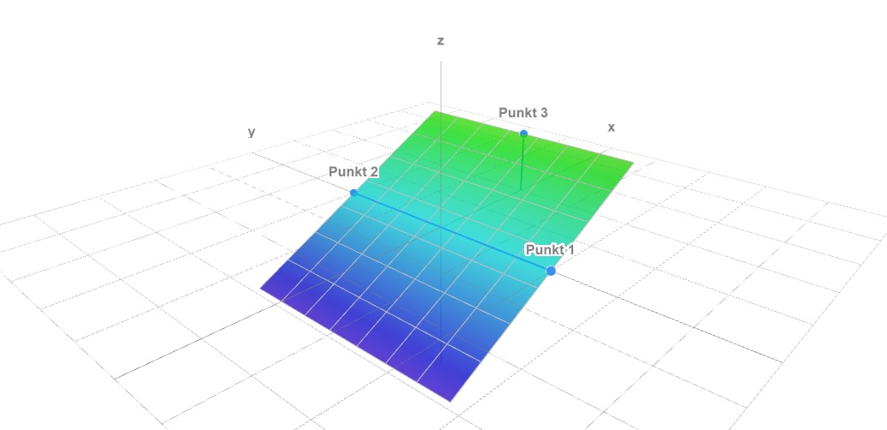
Fläche mit 2 Punkten und Steigung
Fläche aus zwei Punkten und einem Winkel

Mit dieser Funktion können Sie eine Fläche (Ihre gewünschte Planierfläche) aus zwei von Ihnen ausgewählten Punkten und einem Neigungswinkel erschaffen. Sie können zudem die Höhe des zweiten Punktes im Raum an die Höhe des ersten Punktes angleichen, um lediglich eine Flächenneigung in eine Richtung zu garantieren. Legen Sie hierfür den Regler “Höhe angleichen” um. Der Neigungswinkel steht orthogonal (d.h. 90° nach rechts) zu dem Richtungsvektor von Punkt 1 zu Punkt 2. Dies soll folgendes Beispiel erläutern: Sie haben zwei Punkte A und B eingemessen, wobei A als Punkt 1 und B als Punkt 2 in der Flächenerstellung ausgewählt wurde. Wenn Sie nun von Punkt A zu Punkt B schauen, steigt die Fläche nach rechts im eingegebenen Neigungswinkel an.
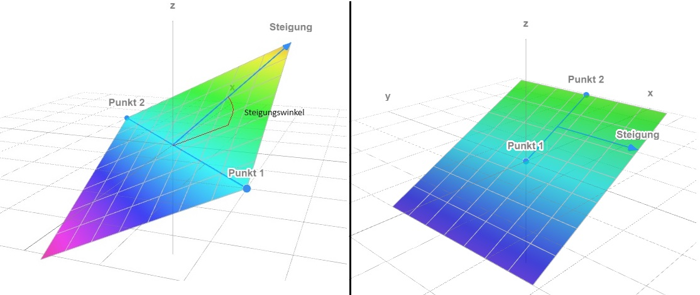
Fläche mit Punkt, Richtung und Steigung
Fläche definiert durch Punkt, Ausrichtung und Steigung

Mit dieser Funktion können Sie eine Fläche (Ihre gewünschte Planierfläche) aus einem von Ihnen ausgewählten Punkt, einem Neigungswinkel und einem Richtungswinkel erschaffen. Sie können als Richtung eine gezielte Himmelsrichtung auswählen (z.B. Ausrichtung nach Norden 0°, Osten 90°, Süden 180° oder Westen 270°) oder Sie nutzen die Löffelrichtung (Fläche steigt dann hinter dem Löffel an). Legen Sie hierfür den Regler “Löffelrichtung nutzen” um und schwenken Sie den Bagger, sodass der Baggerlöffel in die gewünschte Richtung zeigt, bevor Sie die Flächenberechnung starten.
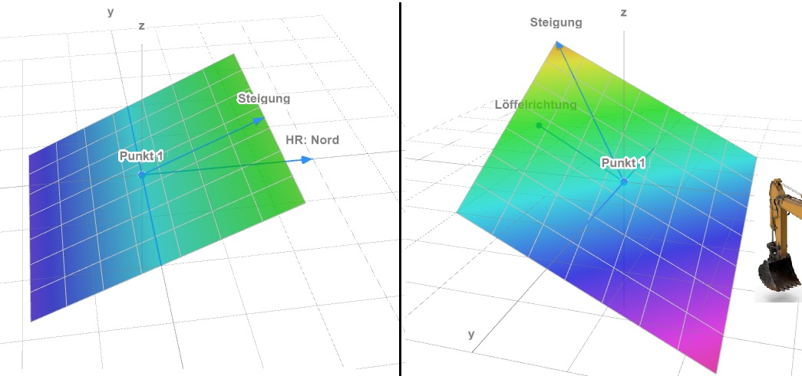
Fläche Horizontal
Parallele Fläche zur Horizontalen definiert durch einen Punkt

Mit dieser Funktion können Sie eine Fläche (Ihre gewünschte Planierfläche) mit Hilfe eines von Ihnen ausgewählten Punktes erschaffen. Für die Flächenberechnung wird lediglich die Höhe des ausgewählten Punktes herangezogen. Auf Basis dieser Höhe wird dann eine parallele Ebene zur Horizontalen geschaffen.
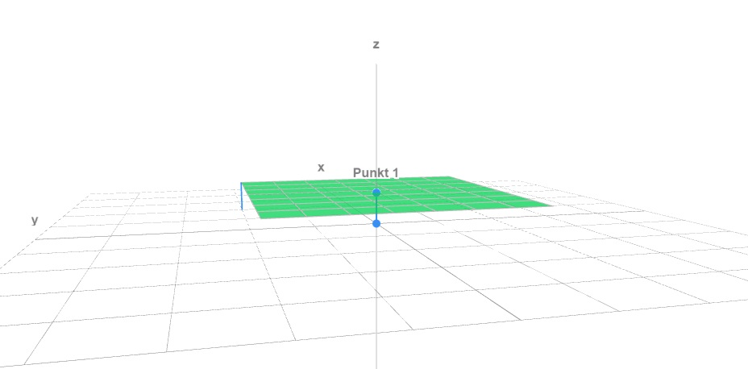
Polyeder erstellen
Polyeder erstellen
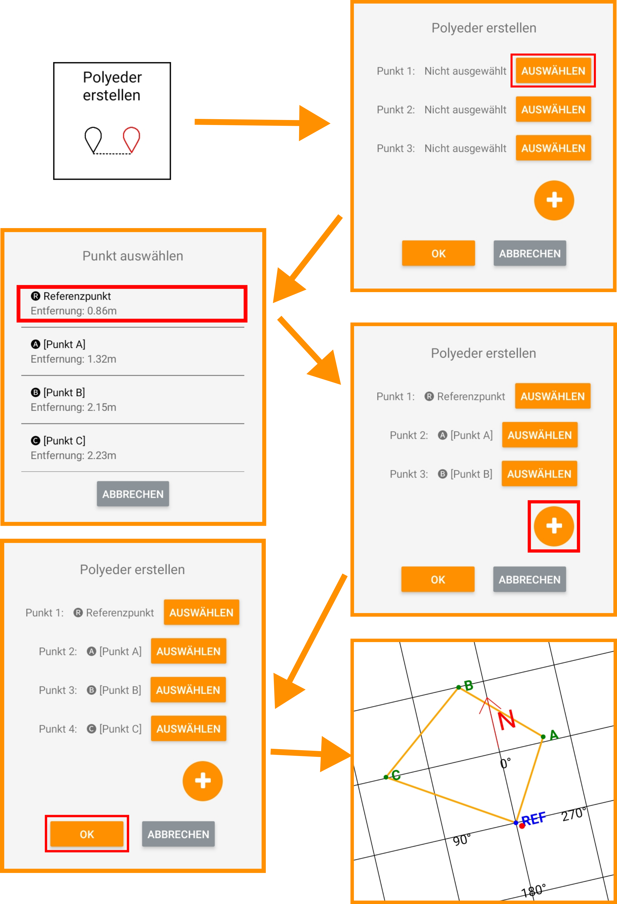
Möchten Sie mehrere Punkte geschlossen mit Strecken verbinden, so können Sie ein Polyeder erstellen. Wählen Sie hierzu 3 oder mehr Punkte in der Reihenfolge aus, in der diese Punkte verbunden werden sollen. Dabei wird Punkt 1 mit Punkt 2, Punkt 2 mit Punkt 3, Punkt 3 mit Punkt 4, usw. verbunden. Der letzte Punkt wird dann wieder mit Punkt 1 verbunden. Mit dieser Funktion lassen sich z.B. Baugruben in der Arbeitsansicht einzeichnen.
Ended: Punkte und Flächen
Arbeitseinstellungen ↵
Werkzeug speichern
Löffelmaße abändern / neu bestimmen
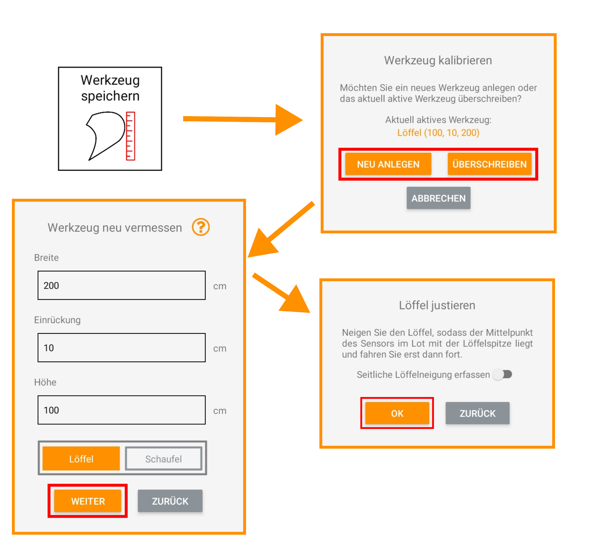
Mit der Funktion "Werkzeug speichern" können Sie entweder ein neues Werkzeug (Löffel oder Schaufel) anlegen oder Ihr aktuell aktives Werkzeug überschreiben (z.B. falls Sie sich vermessen haben). Ausführliche Informationen zum Vermessen des Löffels finden Sie unter Löffel vermessen.
Werkzeug laden
Werkzeug laden
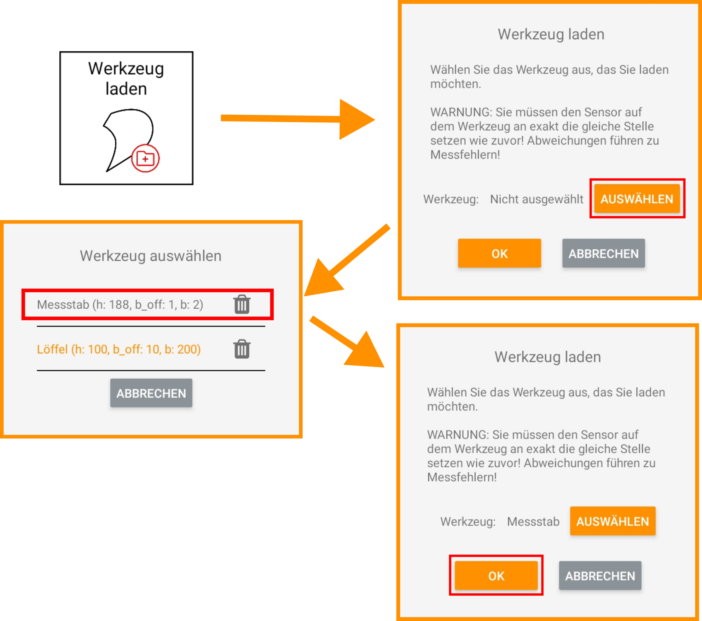
Mit der Funktion "Werkzeug laden" können Sie bereits einmal erstelle Löffel und/oder Schaufeln erneut laden (ohne eine erneute Kalibrierung durchführen zu müssen) oder auf den Messstab wechseln. Dieser ist standardmäßig als Werkzeug hinterlegt. Beachten Sie bitte, dass Ihre Werkzeuge nur lokal in Ihrem Arbeitsplatz gespeichert sind. D.h. Sie müssen zuerst den entsprechenden Arbeitsplatz laden, bevor Ihnen in diesem Projekt abgelegte Werkzeuge angezeigt werden.
Arbeitsplatz speichern
Arbeitsplatz speichern
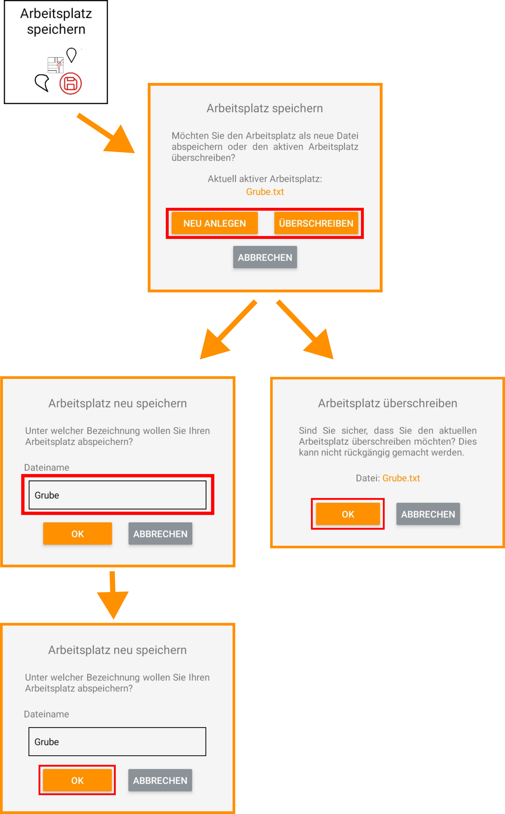
"Arbeitsplatz speichern" benutzen Sie, um alle erfassten - für Ihre Baustelle relevanten - Werte und Einstellungen zu speichern. Sie haben hierfür zwei Optionen. Entweder Sie erstellen eine neue Datei (Neu anlegen) oder überschreiben einen bereits existierenden Arbeitsplatz (Überschreiben).
Im Arbeitsplatz abgespeichert werden folgende Informationen:
- Alle erfassten Punkte inklusive Referenzpunkt
- Alle erfassten Strecken, Geraden und Polyeder
- Die aktuell aktive Fläche mit eingestelltem Versatz und aktiver Werkzeugecke
- Den aktuell geladenen und ausgerichteten Bauplan
- Alle erstellten Werkzeuge (Löffel und Schaufeln)
Bitte beachten Sie, dass Sie alle Änderungen manuell erneut abspeichern müssen. Schließen Sie die App, dann gehen alle nicht abgespeicherten Änderungen verloren (Minimieren der App ist dagegen kein Problem). Ob Sie ungespeicherte Änderungen in Ihrem Arbeitsplatz haben, können Sie ganz unten im Funktionsbildschirm überprüfen.
Arbeitsplatz laden
Arbeitsplatz laden
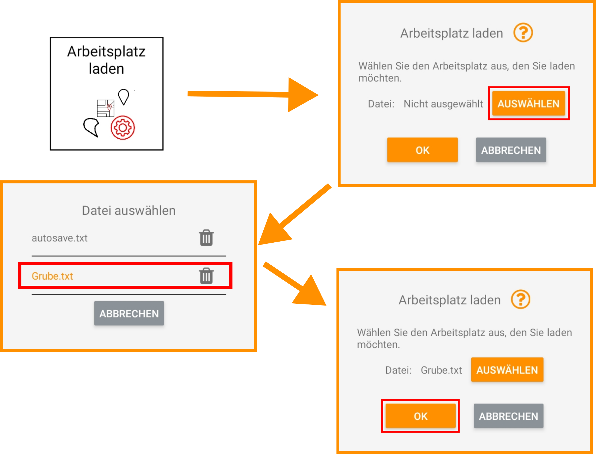
Sie können einen zuvor abgespeicherten Arbeitsplatz wieder laden. In Ihrem Arbeitsplatz befinden sich folgende Informationen:
- Alle erfassten Punkte inklusive Referenzpunkt
- Alle erfassten Strecken, Geraden und Polyeder
- Die aktuell aktive Fläche mit eingestelltem Versatz und aktiver Werkzeugecke
- Den aktuell geladenen und ausgerichteten Bauplan
- Alle erstellten Werkzeuge (Löffel und Schaufeln)
WICHTIG: Im Arbeitsplatz sind alle Punkte relativ zum Referenzpunkt gespeichert (sie haben keine absoluten Koordinaten) und der Referenzpunkt wird in Relation zur Basisstation erfasst. Das bedeutet, dass Sie beim Laden des Arbeitsplatzes zwei Möglichkeiten haben:
-
Sie haben seit den letzten Arbeiten die Basisstation nicht bewegt (z.B. über die Mittagspause haben Sie das System ausgeschaltet). Dann können Sie ohne den Referenzpunkt neu zu setzen ohne Probleme dort weiterarbeiten, wo Sie aufgehört haben.
-
Die Basisstation wurde seit den letzten Arbeiten bewegt. Können Sie auf wenige Milimeter genau bestimmen, wo sich die Basisstation während der letzten Arbeiten befunden hat? Wenn nicht empfehlen wir, den Referenzpunkt erneut zu vermessen, indem Sie mit dem Messstab so genau wie möglich den Referenzpunkt der letzten Arbeiten antasten und erfassen. Die neue Position der Basisstation ist dann egal und führt nicht zu Fehlern.
Positionsfehler der Basis
Sollten Sie die Basisstation nicht wieder auf exakt die selbe Position wie zuvor setzen und auch den Referenzpunkt nicht neu antasten, dann verschieben sich alle im Arbeitsplatz aufgenommenen Punkte um die Distanz zwischen der derzeitigen und der vorherigen Position der Basisstation. Dieser Positionsfehler zieht sich dann durch alle weiteren Arbeiten. Sind Sie sich unsicher, dann setzen Sie den Referenzpunkt neu. Die Position der Basisstation ist dann egal.
Werkzeugecke wechseln
Werkzeugecke wechseln
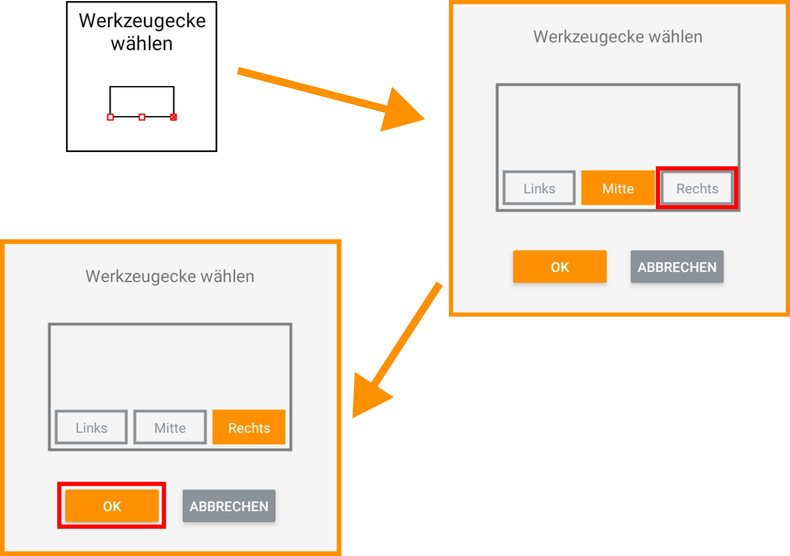
Diese Funktion bietet Ihnen die Möglichkeit, Ihre während der Kalibrierung festgelegte Löffelecke (primär notwendig zum Antasten von Punkten) zu wechseln. Je weiter die Löffelecke vom Sensor entfernt ist, desto größer wird der Höhenfehler. Wir empfehlen daher, im Normalfall die Mitte oder die rechte Löffelecke (bei Montage des Sensors auf der rechten Seite) zu nutzen. Sollte der Sensor links montiert sein, empfehlen wir entsprechend die Mitte oder die linke Löffelecke.
Höhenversatz wählen
Höhenversatz der Planierfläche wählen

Nachdem Sie Ihre Ebene (Ist-Fläche) erstellt haben, müssen Sie einen Höhenversatz wählen, um so die Soll-Fläche in Ihrer Arbeitsansicht zu definieren. Sie können dabei einstellen, ob Sie einen Versatz nach oben (z.B. hilfreich, wenn Erde aufgeschüttet werden soll) oder einen Versatz nach unten (z.B. hilfreich, wenn Gelände abgetragen werden soll) haben möchten. Der Versatz kann zudem vertikal oder orthogonal bemessen werden. Vertikaler Versatz bemisst sich senkrecht zur Horizontalen, wohingegen orthogonaler Versatz orthogonal zur ursprünglichen Ebene gemessen wird.
Referenzpunkt neu setzen
Referenzpunkt neu setzen

Diese Funktion erlaubt eine Neuermittlung des Referenzpunkts.
Warnung: Setzen des Referenzpunktes
Wenn Sie den Referenzpunkt neu setzen, werden alle bisher erfassten und eingestellten Punkte oder Flächen um die Differenz zwischen dem aktuellen Referenzpunkt und dem neuen Referenzpunkt verschoben und sind somit nicht mehr gültig! Wenn die Basisstation neu gestartet wurde oder eine neue Positionserfassung durchgeführt wurde, kann durch erneutes Setzen des Referenzpunktes an der Stelle des alten Referenzpunktes die Arbeitsfläche wieder zur Baustelle synchronisiert werden.
Baupläne vorbereiten und einbinden
Bauplan als SVG laden

Sie können - falls vorhanden - auch einen konkreten Bauplan Ihrer Baustelle in die Kartenansicht der Arbeitsansicht einbinden. Die unter “AUSWÄHLEN” aufgelisteten Dateien beinhalten ausschließlich jene Dateien des Formates .svg, welche in dem Ordner "/Downloads/SVG_folder" ihres Tablets abgelegt wurden. Um Ihren Bauplan auf dem Tablet zu speichern, gehen Sie bitte wie folgt vor: Minimieren Sie die App, schießen Sie das Tablet an Ihren PC an, öffnen Sie auf dem PC den internen Speicher des Tablets, gehen Sie in den Ordner “/Downloads/SVG_folder” und speichern Sie dort Ihren Bauplan ab. Beachten Sie bitte, dass vorerst nur Baupläne des Formates .svg gelesen werden können. Sollte Sie darüber hinaus noch Probleme beim Auswählen Ihres Bauplans in der App haben, dann kann es sein, dass Sie Ihrer excav App erst die Berechtigung erteilen müssen, auf den externen Speicher ihres Tablets zugreifen zu dürfen. Schließen Sie hierfür Ihre App, gehen Sie zu “Einstellungen -> Apps -> excav PILOT -> Berechtigungen” und aktivieren Sie dort die Erlaubnis für Fotos und Videos. Starten Sie im Anschluss die App neu.
Nach erfolgreichem Laden des Bauplans muss dieser noch ausgerichtet werden. Dazu benötigen Sie zwei reale Punkte, die Sie vorher über die Funktion "Punkte erfassen" antasten müssen. Diese realen Punkte müssen auf dem Bauplan eingezeichnet sein, um in dem folgenden Schritt die realen Punkte den Punkten im Bauplan zuordnen zu können.
Oder anders erklärt: Wählen Sie auf Ihrem Bauplan zwei Punkte aus, von denen Sie in der Realität wissen, wo sie sich befinden. Tasten Sie diese realen Punkte mit der Funktion "Punkte erfassen" an. Laden Sie Ihren Bauplan. Tasten Sie Ihre realen Punkte jetzt auf dem Bauplan an und ordnen Sie diesen Bauplan-Punkten die zuvor angetasteten realen Punkten zu. Der Bauplan wird daraufhin ausgerichtet und ist nun in der Arbeitsansicht verfügbar.
Konvertierung von Bauplänen
Sollten Unklarheiten in Bezug auf die Erstellung eines stimmigen .svg Bauplans bestehen (z.B. weil Sie Ihren Bauplan lediglich im .pdf Format vorliegen haben), können Sie sich an uns wenden unter support@excav.de bzw. telefonisch unter +49(0) 9131 9878400. Wir übernehmen die Umwandlung gerne für Sie.
Ended: Arbeitseinstellungen
Sonstige Einstellungen ↵
Sonstige Einstellungen
Einstellungen des Anzeigekreuzes
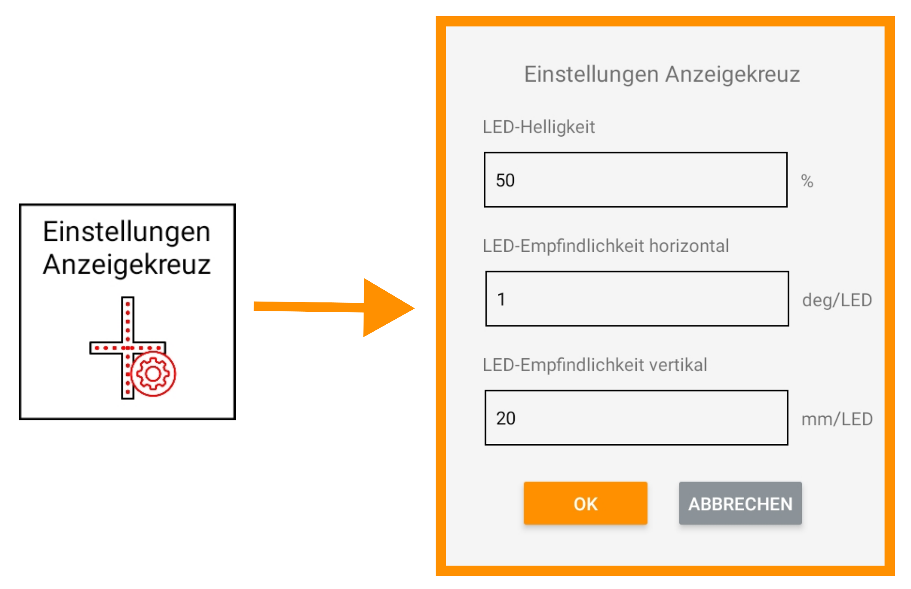
Die Einstellungen des Anzeigekreuzes erlauben es Ihnen die Helligkeit der LEDs festzulegen und Anpassungen der horizontalen sowie vertikalen Ausschlagssensibilität vorzunehmen. Die Standardeinstellungen sind:
- LED-Helligkeit: 50%
- LED-Abstand horizontal: 1 Grad pro LED
- LED-Abstand vertikal: 20mm pro LED
Beachten Sie, dass sich erhöhte LED-Helligkeit negativ auf die Akkulaufzeit der LED-Anzeige auswirkt.
Protokoll und Status
Status-Übersicht
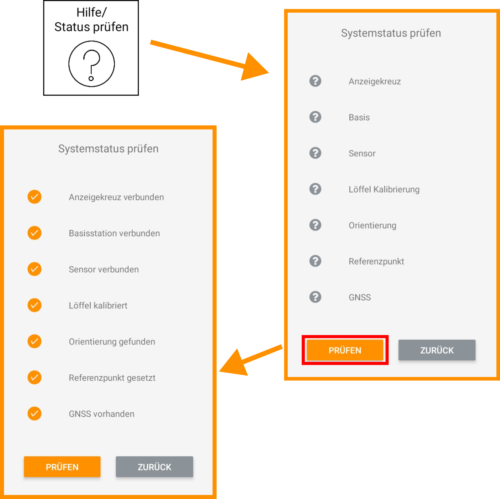
Die Status-Übersicht dient als Hilfe bei der Inbetriebnahme Ihres Systems. Dort aufgelistet finden Sie alle relevanten Kennzeichen (Verbindung zu den einzelnen Systemeinheiten Sensor, Anzeige und Basis; Positionserfassung; Referenzpunkt setzen; Orientierung; Löffelkalibrierung; GNSS-RTK; WLAN-Verbindung). Sollten ein oder mehrere dieser Schritte nicht erfolgt sein, kann das System nicht in Betrieb genommen werden. Alle Kennzeichen - bis auf das Erfassen der Orientierung - werden im geführten Menü des Einrichtungsassistenten abgefragt. Beklagt die App das Fehlen mehrerer der oben aufgelisteten Kennzeichen, empfiehlt sich entsprechend eine wiederholte Durchführung des Einrichtungsassistenten. Das System findet die Orientierung im Normalfall nach wenigen Minuten von selbst (hierfür muss der Baggerlöffel bewegt und geschwenkt werden). Existiert keine GNSS-RTK-Lösung, befinden Sie sich wahrscheinlich mit dem Sensor zu nahe an größeren Strukturen wie Bäumen oder Häusern.
System ausschalten
Ausschalten und verstauen
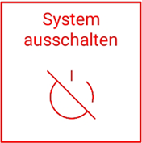
Die Hardware kann über “Funktionen => System ausschalten” komplett abgeschaltet werden. Alternativ können durch die Betätigung der Drucktaster an Basisstation, Anzeige und Sensor diese abgeschaltet werden.
Ended: Sonstige Einstellungen
Ended: Funktionen
Ended: App
Brauche ich externe Korrekturdaten?
Nein. Jedes System kommt mit eigener Basisstation, welche direkt Korrekturdaten vor Ort erzeugt.
Kann ich das System auch an Mietmaschinen anbringen?
Ja, da alles über Magnet bzw. Saugnapf angebracht wird, wird die Maschine nicht verändert / muss nichts angeschraubt werden.
Wieviel kostet der Versand?
Wir übernehmen alle Versandkosten. Wir versenden im Normalfall mit DHL. Wenn ein anderer Dienstleister gewünscht ist, sprechen Sie uns bitte an.
Die App reagiert nicht mehr.
Starten Sie die App neu, indem sie vom unteren Rand des Tablets in die Mitte hochwischen und halten, bis die laufenden Apps angezeigt werden. Nehmen Sie die Excav PILOT-App und wischen Sie nach oben, um diese zu schließen. Gehen Sie anschliesend wieder auf die Android-Startseite und starten Sie die App neu.
Die App zeigt an, dass keine der Hardware gefunden wird.
Überprüfen Sie die WLAN-Verbindung. Wischen Sie dazu vom oberen Bildschirmrand herunter und halten Sie das WLAN-Logo bis die Einstellungen göffnet werden. Überprüfen Sie hier die Verbindung, bzw. verbinden Sie im Zweifelsfall neu. Unter seltenen Umständen kann es vorkommen, dass das Tablet mit dem WLAN des Anzeigekreuzes verbunden ist, die App aber dennoch keine Hardware findet. Verbinden Sie das WLAN in diesem Falle so lange neu und starten sie zwischendurch die App neu, bis die Hardware erkannt wird.
Die App zeigt an, dass lediglich ein Hardwareelement (Basisstation oder Sensor) nicht gefunden wird.
Überprüfen Sie zuerst bitte den Akkustand (leuchtet der Anschaltknopf grün?). Wenn ja, starten Sie das Element neu und prüfen Sie die Verbindung in der App. Sollte das Element nach wie vor nicht erkannt werden, bringen Sie die Geräte näher zusammen.
Sollte all dies keine Abhilfe geschafft haben, dann muss das Element vermutlich neu gekoppelt werden. Sie können dies selbstständig vornehmen, indem Sie die entsprechende MAC-Adresse (zu finden auf der Unterseite des Sensors bzw. der Basisstation) in den Einstellungen (das Icon mit den drei Strichen ganz rechts neben "Funktionen" in der Fußleiste der App) unter "System|System koppeln" eingeben und bestätigen.
Die Neigung des Löffel passt nicht zu der auf der App angezeigten Neigung.
Überprüfen Sie, ob der Pfeil auf dem Sensor in Richtung Fahrerkabine zeigt. Wenn der Sensor falsch montiert war, führen Sie nach der Korrektur erneut eine Löffelkalibrierung durch.
Sicherheitshinweise


Dieses Produkt darf nur von Personen bedient werden, die mit der Bedienung dieses Produkts vertraut sind. Das Produkt darf nur wie in dieser Bedienungsanleitung beschrieben verwendet werden. Es liegt in Ihrer Verantwortung für Ihre Sicherheit und die Sicherheit Dritter zu sorgen, wenn Vorgehensweisen und Werkzeuge zum Einsatz kommen, die nicht ausdrücklich in dieser Bedienungsanleitung empfohlen wurden. Die meisten Unfälle lassen sich vermeiden, indem grundlegende Sicherheitsregeln und -maßnahmen zu jedem Zeitpunkt eingehalten werden, und gefährliche Situationen frühzeitig erkannt werden. Alle Beteiligten müssen über die zum Ausführen ihrer Aufgaben notwendige Ausbildung verfügen. Um gefährliche Situationen zu vermeiden, ist eine unsachgemäße Bedinung und eine unvorschriftsmäßige Wartung oder Reparatur zu unterlassen. Außerdem müssen Sie sicherstellen, dass während der Verwendung des Produkts das Produkt keine Beschädigung erleidet. Dies kann dazu führen, dass eine Gefahr vom Produkt ausgeht.
Der Artikel ist kein Spielzeug und ist für Kinder und Jugendliche unter 18 Jahren nicht geeignet.
An der Unterseite von Sensor, Basis und Anzeigekreuz sind Starkmagneten angebracht. Um Sachschäden und Verletzungen zu vermeiden, ist mit diesen sehr starken Magneten besonders vorsichtig umzugehen. Die Magnete können elektronische Geräte wie u.a. Hörgeräte, Herzschrittmacher, Computer und Speichermedien sowie Bankkarten beschädigen. Es ist zu jedem Zeitpunkt ein ausreichender Sicherheitsabstand zwischen Magneten und magnetisch beeinflussbaren Gegenständen einzuhalten. Des Weiteren besteht besondere Vorsicht beim Anbringen des Sensors, der Basis und des Anzeigekreuzes, da hierbei durch die auf diesen Systemelementen angebrachten Magneten eine Quetschgefahr von Körperteilen bei der Anbringung und Entfernung besteht. Zusätzlich ist bei der Anbringung und Entfernung der Systemelemente besondere Vorsicht vor scharfen Kanten geboten, um Schnittverletzungen zu vermeiden. Um sowohl die Quetschgefahr als auch die Schnittgefahr möglichst gering zu halten, sind bei der Anbringung und Entfernung der Systemelemente Handschuhe zu tragen.
Bei der Anbringung der Systemelemente ist darauf zu achten, dass diese einen guten Halt auf der Maschine besitzen. Befreien Sie daher vor der Anbringung der Systemelemente die entsprechenden Stellen von Verunreinigungnen und Hindernissen. Das Aufladen des Akkus der einzelnen Systemelementen ist nur unter Beaufsichtigung durchzuführen.
Jede missbräuchliche Verwendung des Produkts führt zum Erlöschen der Garantie, Gewährleistung und der allgemeinen Haftung von excav. Reparaturen dürfen nur durch autorisierte Reparaturstellen vorgenommen werden. Eigenmächtige, unbefugte Eingriffe können zu Körperverletzung und Sachschaden führen. Die Garantie, Gewährleistung und allgemeinen Haftung von excav erlischt in diesem Fall.